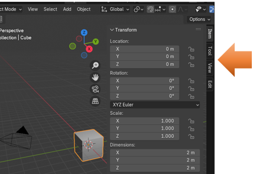

~ The Different Types of Menus~
1/20/2025
The Different Unique Menu System
The Top section of the Ride- Side Panel
The Property tabs for the Object
The Property tabs for the light
Last week, we took a look at the Main menu, which resides at the very top of the Blender application. But Blender uses a whole lot of menus. It has just about every time of menu that you can think of. This week, we will be taking a look at the Sub menu, which is located right below the Tippy-Top Main Menu.
The Different Unique Menu System
Again, because the Menu system is so long, I split this sub-header menu in half.
The sub menu is also a header type of menu, like the Tippy top menu.
But as I said, the menu system in Blender is quite diverse. You have many different forms in which you can use to get to certain sections that you want to get to. You have.
Header Menus: The Top two menus. Tippy-Top, and the Sub menu.
Collapsing Menu: To gain extra space a header will use a collapsing menu.
Select Menu: A select menu allows you to choose between a set of options.
Popover Menu: A popover menu is an overlay. And like pop up they will include the arrow on the right-hand side of the menu button to tell you that you can click here and have access to more options.
Context Menu: Context menus are pop-ups opened with either the menu key or the Right Mouse Button for easy access to different options.
This is the Menu key on the keyboard

You can use either the menu key, or the Right mouse button, and in Object mode you will come up with the same menu. As you can see, using the right mouse button and clicking on the box will bring up all of these different options, which can be very helpful.
>
Pie Menus: You also have Pie Menus. For instance, hitting the Z button on the keyboard will bring up this menu, where you can quickly enter different modes. Click on the box in the viewport first and then hit the Z button on the keyboard.
You also have this overlay type of menu in which you can bring up by hitting the N button in the viewport with the keyboard.
Sidebar menu: You can call this a side board panel, or an extra type of menu. There is the major side bar menu will take up the entire right side of the interface, but there is an additional type of panel, which can be brought up in the view port itself.
Click on the N key on the viewport in Object mode to take a look at this menu. You can also click on a tiny little arrow on the right side of the viewport.
You will see that by popping open this menu you can change things about the object, such as the location, Rotation, Scale and Dimensions.
The Item Tab
You can also see that we have a few other tabs that we can also view in this panel. You can get to them by going to the right side of this panel and clicking on a tab.

The Tool Tab
This tab deals with the tool, you are using and the contents will change based on that tool. The active tool that is up in this next image is demonstrating what you will see with the Select tool, which is the first tool in the tool panel on the left of the viewport.
The View Menu
The view menu in the object mode seems to have a lot more to do with the camera than the object on the screen.
The Edit Tab
Here we are in the edit tab of this side, option- panel, but our viewport is still in Object mode. And in object-edit tab button of this secret panel, you will see that if you click on this last tab button, that you will find the simple text of Boolean sitting there in the viewport. If you click on the word Boolean in the viewport, it will take you to a Boolean object menu.

There are very few procedures that you can do in Object mode, since your object is in one piece, but cutting up this one piece is something that you can do, so you will be presented with it. Besides adding new objects, one more thing that can, and should be done in Object mode is to mirror an object. But mirroring is something that we will be taking a look at in later chapters of this series. For now, we are just looking at the numerous different menus, such as this Boolean menu inside of the Edit tab.
The Right -Side Panel
This may not exactly be a menu but more of a side panel filled with a lot of things property-wise that you can do in Blender. At the top of this side panel is a section that shows you what you have in your scene. This can be called a Scene Collection, or it is sometimes referred to as an outliner.
The Top section of the Ride- Side Panel
Here you can tell that we have in the viewport a camera, a cube, and a light.
And if you look in the viewport, you can see that is what we do have.
The Property Panel
The property section of this side panel is humongous, and it actually will change depending on if you are working on an object, the camera or the light. If you are confused that you cannot find the properties for the Light or the camera, it is because each of them will need to be clicked on in able to see the tab for them in the tabs on the left of this panel. Since this panel is so large, it will take another tutorial in order to introduce all the sections to you. For now just realize that the properties are there for just about anything you find that you want to do in Blender.
The Property tabs for the Object
The Property tabs for the light
Remember, click on the light in the viewport to see the tab for the lights pop up in the list of icons at the left of the Property panel.
The Properties for the Camera
Remember to click on the camera in the viewport in order to see the tab for the camera to come up.
Well, that is about it for explaining about the different types of menus, and even some panels that you will come across in Object mode. Some of your workspaces may share the same stuff in their menus, but a lot of the things you will find in the menus of each workspace will be unique to being able to perform the specific task that the workspace was created to allow you to do.